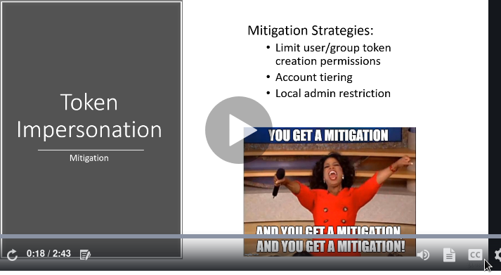

limiting grp user tokenm isnt the most full proof method as loopholes can yet be found in that too
account tiering :domain amdinsitrator should only be kkigging in to those machines whihc need it like
u actually impersonate other machines and take the whole system down
if users arent local admins on their accounts we cant get a shell on that pc
domain admin accounts have stronger passwordds and better account poliicies